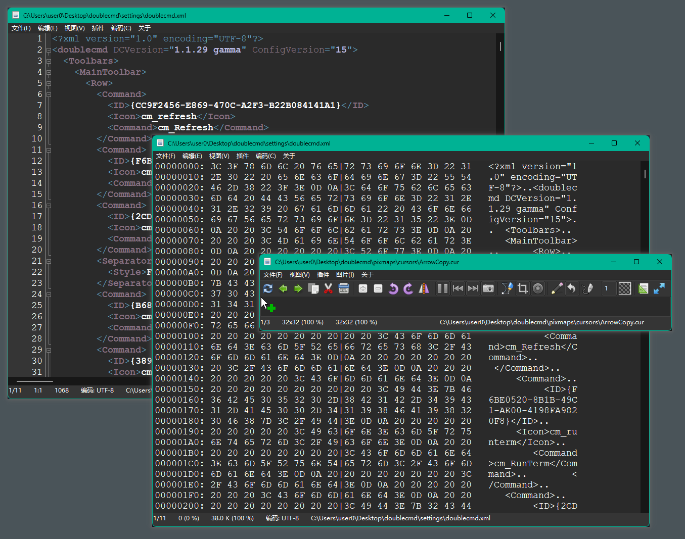
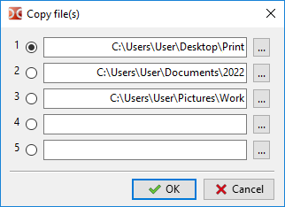

内置查看器用于以文本、十六进制或二进制格式以及图像格式查看任意大小的文件。

所选文本会被自动复制到剪贴板，若要禁用此行为可以使用 <AutoCopy> 参数。
默认情况下，查看器（内部命令 cm_View）绑定在 F3 键上。如果选中多个文件，则会打开第一个被选中的文件，并可使用 上一文件 和 下一文件 命令在这些文件之间切换（否则这些命令会按当前目录加载文件）。若要始终打开光标下的文件，可使用 Shift+F3。热键可在 按键 > 热键 设置中更改。
支持的图像格式：BMP、CUR、GIF、ICNS、ICO、JPEG、PNG、PNM（PBM、PGM 和 PPM）、PSD、SVG/SVGZ、TIFF、XPM。此外，如果存在所需库，还支持：
HEIF/HEIC 与 AVIF：libheif.dll（Windows）或 libheif.so.1（Linux 等类 Unix 系统）。
SVG/SVGZ：librsvg-2-2.dll、libcairo-2.dll 和 libgobject-2.0-0.dll（Windows），或 librsvg-2.so.2、libcairo.so.2 和 libgobject-2.0.so.0（Linux 等）。如果这些库可用，Double Commander 将使用 librsvg 库替代内置的 Image32 图形库。
WebP：libwebp.so.N，其中 “N” 为 7、6 或 5（Linux 等）。
Double Commander 支持 TurboJPEG 库，它是一个使用 SIMD 指令加速图像解码和编码的 JPEG 编解码器：libturbojpeg.dll（Windows）、libturbojpeg.so.0（Linux 等）或 libturbojpeg.dylib（macOS）。
注意：在 Windows 上，这些库应位于 Double Commander 可执行文件附近，或位于可执行文件附近的 plugins\dll 子文件夹，或放在 Windows 系统文件夹中。
Double Commander 支持 Windows Imaging Component（Windows Vista 及更高版本）：WIC 提供了一个可扩展的图像处理框架，包含若干内置解码器（BMP、DDS、GIF、ICO、JPEG、JPEG XR、PNG 和 TIFF），并可通过外部解码器支持 RAW、HEIF/HEIC、WebP 等格式。对于 BMP、GIF、ICO、JPEG、PNG 和 TIFF，Double Commander 会跳过外部解码器，因为这些格式已被内置支持。
在 Windows 上，Double Commander 可使用系统内置的 HEIC 解码器（Windows 11 24H2 及更高版本）。
内置查看器支持保存为以下图像格式：BMP、ICO、JPEG（可选择质量 1–100，默认 80，参见 <JpegQuality>）、PNG（保留原图像的色深）和 PNM（使用二进制格式，色深将自动设为 1、8 或 24 位/像素）。
注意：修改图像时，必须使用 保存 或 另存为 命令保存所有更改：在关闭查看器窗口或切换到其它文件时，Double Commander 不会检测文件是否已更改。
可在 按键 > 热键 的 查看器 分类中为查看器命令分配或更改热键。文本模式和图像查看模式可以分别设置热键。
前一个 和 下一个 用于加载目录中的上一个或下一个文件。如果选中了多个文件，这些命令会依次加载选中的文件。使用文件面板中的排序顺序。
保存 和 另存为... 仅在查看图像时可用。
打印... – 打开系统打印对话框。仅当使用支持打印的插件查看时可用。
打印设置... – 打开设置打印边距（左、右、上、下）的对话框。
重新加载 – Double Commander 将在不关闭查看器窗口的情况下强制重新读取文件。对于被外部程序修改的文件很方便。
自动重新加载 – 仅用于文本模式：如果启用，Double Commander 每 2 秒检查一次文件大小，如有变化则重新读取文件并将内容滚动到末尾，便于查看不断更新的日志文件。该模式仅适用于当前文件，切换文件或关闭查看器时将被禁用。启用时，状态栏中会在文件名前显示星号 "*"。
退出 – 关闭查看器窗口。
该菜单包含选择与复制文本的命令，以及在被查看文件内容中搜索的命令：查找、查找下一个 和 查找上一个。
搜索选项：
区分大小写 – 区分大写和小写，例如 “Fallout” 与 “fallout” 将被视为不同。
十六进制 – 搜索十六进制字符（不区分大小写，可带空格或不带空格，例如 "C0 C1 C2" 或 "c0c1c2"）。
正则表达式 – 启用时可使用 正则表达式。
后退 – 切换搜索方向：从文件末尾向前搜索而不是从开头向后搜索。
该菜单用于切换查看模式，并包含若干附加选项。
预览 – 显示或隐藏 预览 面板。
程序会自动选择合适的查看模式，以下项目可强制切换查看方式：
文本方式显示 – 以纯文本显示文件内容（或控制台命令输出，参见 文件关联）。可设置单行最大字符数，超过后换行（默认 1024）。
二进制方式显示 – 原样显示文件内容。不可打印字符将显示为点，但复制文本时会保留控制字符（换行、回车、制表等）。固定行宽为 80 字符。
十六进制方式显示 – 窗口显示三列：从文件开头的偏移（字节）、16 字节的十六进制表示和对应的 16 个字符的明文表示。不可打印字符将显示为点。选择第二列的值时，第三列对应字符也会被选中，反之亦然。
十进制方式显示 – 与上项类似，但以十进制表示字节值。
书籍式显示 – 特殊查看模式：文本以多栏显示（类似对开或报纸排版）。可设置字体与大小、前景和背景颜色，以及列数（1、2 或 3）。
图形 – 切换到图像查看模式。支持格式见本页 开头 列表。
插件 – 使用 WLX 插件查看。如果所选文件可被多个已安装插件打开，重复调用此命令会在这些插件间循环切换。
Office XML（text only） – 查看基于 XML 的办公文档（Microsoft Office 的 DOCX、XLSX 和 OpenOffice/LibreOffice 的 ODT、ODS）中的文本，保留段落但不保留文本格式。
Code – 以代码视图显示文件：带语法高亮和行号。使用与内置文本编辑器相同的高亮规则和扩展名列表（详见 此处）。在此模式下，查看器使用 内置编辑器的设置，另见 <SynEditMask> 的说明。
插件对其他查看模式具有优先权。
Warp text – 启用或禁用对超出窗口宽度的行按单词边界换行。
显示文本光标 – 显示或隐藏闪烁的文本光标。
该菜单列出所有已添加并启用的 WLX 插件。菜单前半部分包含适用于当前文件的插件（Double Commander 会检查检测字符串），其余插件列在第二部分。
未进行排序时，插件按在对应设置区添加的顺序列出。
在文本模式查看时：此菜单列出可用的文本编码，默认启用自动检测。
使用插件时，该菜单仅包含三项：
Auto-detect – 自动检测编码。
ANSI – 系统默认 ANSI 编码（取决于系统区域设置）。
OEM – 系统默认 OEM（DOS）编码（取决于系统区域设置）。
在查看 GIF 文件时，图片 菜单不可用。
拉伸 – 按比例调整图像以填充查看器窗口（保持纵横比）。
拉伸时仅放大 – 仅当图像大于当前窗口时才调整图像大小（保持纵横比）。
居中 – 将图像在查看器窗口中居中显示，而不是左上角对齐。
Show transparency – 对透明区域使用棋盘格背景。
旋转 子菜单包含若干相似操作：
前三个命令围绕中心按指定角度旋转图像：+ 90（向右旋转 90 度）、+ 180 和 - 90（向左旋转 90 度）。
水平镜像 – 将图像做水平翻转（左右互换）。
垂直镜像 – 将图像做垂直翻转（上下互换）。
放大 与 缩小 – 用于调整图像缩放比例的命令。
全屏显示 – 切换到全屏模式（不显示操作系统的窗口边框等界面元素）。该模式不仅在查看图像时可用，亦可通过热键使用（默认 Alt+Enter）。
截图 子菜单 – 立即或延时（3 或 5 秒）截取桌面截图。
使用插件时，该菜单仅包含三项：拉伸、仅拉伸较大图像 和 居中。
仅显示查看器名称。
工具栏中汇集了内置查看器的若干命令和附加工具。仅在查看图像时显示。

重新加载当前文件 – Double Commander 将在不关闭查看器窗口的情况下强制重新读取文件，适用于被外部程序修改的文件。
按钮 加载上一文件 和 加载下一文件 用于按文件面板排序顺序加载上一个或下一个文件。
复制文件 – 参见 复制/移动文件。
移动文件 – 参见 复制/移动文件。
删除文件 – 将删除正在查看的文件，并弹出确认对话框。
放大 与 缩小 – 调整图像缩放比例。
向左旋转 90° – 围绕中心向左旋转图像 90 度。
向右旋转 90° – 围绕中心向右旋转图像 90 度。
镜像 – 即 水平镜像：将图像左右反转。
下一个分组仅用于 GIF 动画：
暂停/播放 – 暂停或继续动画播放。
上一帧 与 下一帧 – 在动画帧间切换。
导出帧 – 保存当前动画帧。
下一个按钮组与选择有关：
高亮 – 启用矩形选择工具。
裁剪 – 根据选择裁剪图像。
红眼 – 去除红眼功能。
下一个按钮组与绘图相关：
画图 – 启用画图工具。
撤销 – 撤销上一步操作。
绘图工具选择菜单：画笔、矩形 和 椭圆。
宽度 – 选择线宽（1 到 25 像素）。
颜色 – 设置线条颜色。
调整大小 – 图像调整工具允许指定像素级的宽度和高度（自动保持纵横比）。
全屏 – 切换全屏模式并返回。该模式不仅用于图像查看，也可通过热键使用（默认 Alt+Enter）。
窗口扩展到全屏时，会出现一个额外的 幻灯片放映 按钮：可启用自动加载当前目录的下一个图像，并设置显示时间（1 到 25 秒）。
状态栏的外观和内容取决于查看模式：文本、图像或 WLX 插件。
状态栏开头显示当前打开文件的编号以及当前目录中文件的总数。
文本模式：显示在文件内容中的位置（以字节和百分比表示）、文件大小和文本编码。
图像模式：显示当前分辨率（像素与百分比）、图像实际分辨率以及选择区域大小（使用选择工具时）。
WLX 插件模式：显示插件名称和编码。

状态栏结尾处显示被查看文件的完整名称。
位于窗口左侧的面板，目录中的文件以缩略图显示（缩略图下方显示文件名）。类似文件面板中的 缩略图模式。

使用文件面板的排序顺序。用于启动查看器的文件始终在列表中排在第一位。
预览面板可以展开以多列显示缩略图列表。
有单独的工具栏，包含若干常用功能：重新加载当前文件、加载上一文件、加载下一文件、复制文件、删除文件 和 移动文件，参见上方 工具栏 的相应按钮说明。
查看器可以通过热键或工具栏/预览面板上的按钮复制或移动正在查看的文件（内部命令 cm_CopyFile 和 cm_MoveFile）。最多可指定 5 个目标目录并在它们之间切换：

当需要将查看的文件放入不同目录或制作额外副本时，该功能很方便。
附加的文件查看模式（默认 Ctrl+Q）：不使用单独窗口，而是在相对（非活动）文件面板中显示光标下文件的内容。随着在文件面板中移动光标，显示内容会实时更新，从而能通过移动光标快速预览文件内容。
再次按 Ctrl+Q 可关闭快速查看；切换任一面板（活动或非活动）到其它标签页时也会被禁用。
在 文件关联 设置中添加的“查看”操作将被忽略，除非该应用是通过 {!DC-VIEWER} 宏启动的。
并非所有查看器命令都能在该模式下工作，例如按目录加载上/下一个文件的命令（默认 P 与 N）。
在状态栏上右键单击会弹出包含若干子菜单的菜单（取决于当前模式）：
“插件”模式：包含 “查看”、“插件”、“编码” 和 “图像”；
“图形”模式：包含 “查看”、“插件” 和 “图像”；
其它模式：包含 “查看”、“插件” 和 “编码”。
（详见上文说明。）
某些界面元素可能会被隐藏（例如在“图形”模式下查看图像时，Double Commander 会隐藏工具栏）。对于插件没有通用规则或建议，由插件作者决定行为。